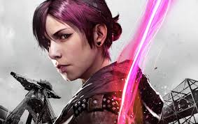

I, Abigail Walker, am a Conduit. Growing up I was a normal girl, the most normal you can be. When I was 17 I discovered my powers. When my parents found out then tried to hand over to cold hands of D.U.P. and they knew that it was a prison but they didn’t care! My only savior was Brent, my brother. We moved from city to city to get to Canada, along the way the Shane, a drug lord, pumped me with drugs and forced me to kill my brother and took me into the hands of D.U.P who shipped me off to Curdun Cay. After 2 years, they told me that I could get my revenge on my brother’s murderer. Augustine told me I was ready and shipped off to the military along with Eugene and Hank. After years Hank got us to escape from a the van allowing to escape to Seattle. I vowed to avenge my brother, I stopped 21 drug lords while the D.U.P labeled me as a crazy bio-terrorist that attacked random civilians. People used me for a reason why they should protest conduits. After Delsin saved me from being arrested, he helped me have more restainst and together we stopped a huge drug shipment into Seattle. What did the D.U.P ever do? They labeled me a
MONSTER! OUT OF CONTROL CONDUIT! A BIO-TERRORIST! HELP STOP D.U.P!